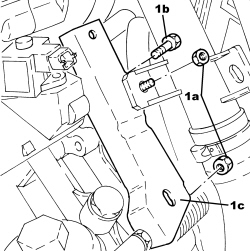
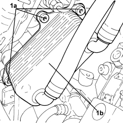
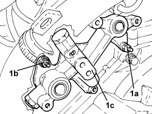
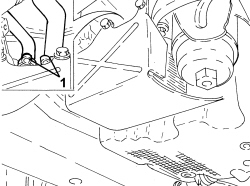
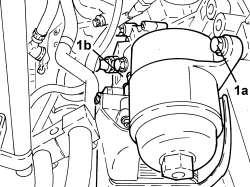
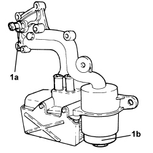

1084C15 ENGINE OIL HEAT EXCHANGE MOUNT R R
- Path
- Procedures > 10 ENGINE > 1084 ENGINE LUBRICATION > 1084C ENGINE OIL COOLING CIRCUIT > 1084C15 ENGINE OIL HEAT EXCHANGE MOUNT R R
- Kind
- repair procedure (removal / refitting; the operation number is the code)
- Applies to
- engines: 1.9 JTS, 2.2 JTS, 3.2 JTS; all production periods
- Interactive page
- https://sloeber94.github.io/elrnDB/#/939010661
Applies to: engines: 1.9 JTS, 2.2 JTS; all production periods
 Removing
Removing
 Refitting
Refitting
Applies to: engines: 1.9 JTS, 2.2 JTS; all production periods

Applies to: engines: 1.9 JTS, 2.2 JTS; all production periods

Applies to: engines: 1.9 JTS, 2.2 JTS; all production periods

Applies to: engines: 3.2 JTS; all production periods
Removing
RefittingOp. 0010T84 COOLANT FOR AIR CONDITIONING SYSTEM - DEHYDRATE AND REPRESSURIZE
Op. 0010T20 ENGINE COOLANT - CHANGE
Op. 1080B92 LEFT UPPER LAMBDA SENSOR - R.R.
Op. 7055B54 UNDER ENGINE PROTECTION/GUARD - R.R.
Op. 1072C40 LEFT EXHAUST MANIFOLD HEAT SHIELD - R.R.
Op. 1084A16 OIL DIPSTICK PIPE - R.R
Op. 1072C30 LEFT EXHAUST MANIFOLD - R + R AND REPLACE GASKET
1. Loosen the bands and disconnect the coolant inlet and outlet pipes from the engine oil heat exchanger.

Applies to: engines: 3.2 JTS; all production periods
Op. 5040A20 AIR CONDITIONING COMPRESSOR - R+R - INCLUDES FLUID LEVEL CHECK AND TOP UP IF NECESSARY
1. Undo the bolts (1a) securing the engine oil heat exchanger (1b) to the sump and to the crankcase and remove it complete with oil filter and oil pressure switch.
- Remove the gasket.

Applies to: engines: 3.2 JTS; all production periods
1. If necessary, undo and remove the engine oil pressure switch (1a), undo the cover (1b) and remove the oil filter cartridge.

Applies to: engines: 3.2 JTS; all production periods
- Remove the O-rings between the heat exchanger and the support.
Applies to: engines: 3.2 JTS; all production periods
Refitting
Removing- Fit new O-rings between the heat exchanger and the support.
- Place the oil filter cartridge in position.
- Tighten the engine oil filter cover to the recommended torque.
Component | Fastening | dia | Value (daNm) | Validity |
|---|---|---|---|---|
Engine oil filter element cover | - | - | 2.5 | 3.2 JTS |
- Place the engine oil pressure switch in position and tighten it to the recommended torque.
Component | Fastening | dia | Value (daNm) | Validity |
|---|---|---|---|---|
Switch for engine oil pressure warning light | - | M12 | 1.8 | 2.2 JTS 3.2 JTS |
- Place the engine oil heat exchanger in position complete with oil filter and oil pressure switch and tighten the bolts to the recommended torque.
Component | Fastening | dia | Value (daNm) | Validity |
|---|---|---|---|---|
Engine oil filter and heat exchanger mounting | Bolt | - | 2.3 | 3.2 JTS |
- Connect the coolant inlet and outlet pipes to the engine oil heat exchanger and fasten the bands.
Op. 1072C30 LEFT EXHAUST MANIFOLD - R + R AND REPLACE GASKET
Op. 1084A16 OIL DIPSTICK PIPE - R.R
Op. 1072C40 LEFT EXHAUST MANIFOLD HEAT SHIELD - R.R.
Op. 7055B54 UNDER ENGINE PROTECTION/GUARD - R.R.
Op. 1080B92 LEFT UPPER LAMBDA SENSOR - R.R.
Op. 0010T20 ENGINE COOLANT - CHANGE
Op. 0010T84 COOLANT FOR AIR CONDITIONING SYSTEM - DEHYDRATE AND REPRESSURIZE
Topics linked from this page (8)
- 0010T20 ENGINE COOLANT - CHANGE
- 0010T84 COOLANT FOR AIR CONDITIONING SYSTEM - DEHYDRATE AND REPRESSURIZE
- 1072C30 LEFT EXHAUST MANIFOLD - R + R AND REPLACE GASKET
- 1072C40 LEFT EXHAUST MANIFOLD HEAT SHIELD - R.R.
- 1080B92 LEFT UPPER LAMBDA SENSOR - R.R.
- 1084A16 OIL DIPSTICK PIPE - R.R
- 5040A20 AIR CONDITIONING COMPRESSOR - R+R - INCLUDES FLUID LEVEL CHECK AND TOP UP IF NECESSARY
- 7055B54 UNDER ENGINE PROTECTION/GUARD - R.R.